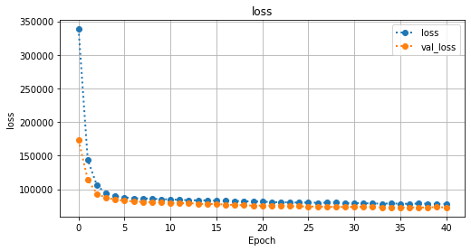
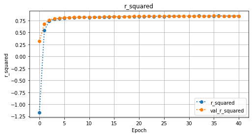
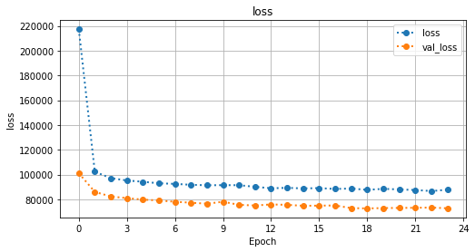
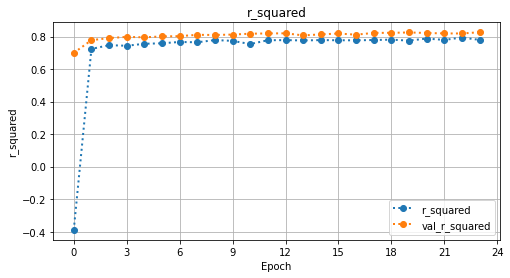
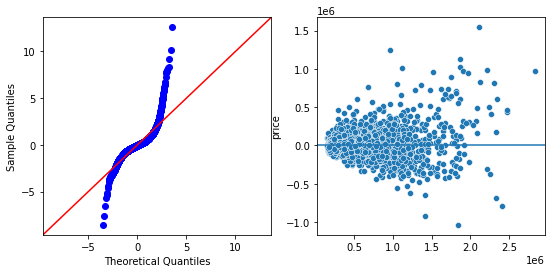
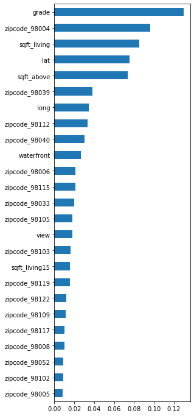

Revisiting King County Home Prices#
from sklearn.pipeline import Pipeline
from sklearn.impute import SimpleImputer, KNNImputer
from sklearn.preprocessing import StandardScaler, OneHotEncoder,MinMaxScaler
from sklearn.compose import ColumnTransformer
from sklearn.model_selection import train_test_split
from sklearn import metrics
from sklearn import set_config
set_config(display='diagram')
import matplotlib as mpl
import matplotlib.pyplot as plt
import seaborn as sns
import pandas as pd
import os,sys
## load data
url = 'https://raw.githubusercontent.com/learn-co-curriculum/dsc-phase-2-project/main/data/kc_house_data.csv'
df = pd.read_csv(url,na_values='?')
df.drop(columns=['id','date'],inplace=True)
df
| price | bedrooms | bathrooms | sqft_living | sqft_lot | floors | waterfront | view | condition | grade | sqft_above | sqft_basement | yr_built | yr_renovated | zipcode | lat | long | sqft_living15 | sqft_lot15 | |
|---|---|---|---|---|---|---|---|---|---|---|---|---|---|---|---|---|---|---|---|
| 0 | 221900.0 | 3 | 1.00 | 1180 | 5650 | 1.0 | NaN | 0.0 | 3 | 7 | 1180 | 0.0 | 1955 | 0.0 | 98178 | 47.5112 | -122.257 | 1340 | 5650 |
| 1 | 538000.0 | 3 | 2.25 | 2570 | 7242 | 2.0 | 0.0 | 0.0 | 3 | 7 | 2170 | 400.0 | 1951 | 1991.0 | 98125 | 47.7210 | -122.319 | 1690 | 7639 |
| 2 | 180000.0 | 2 | 1.00 | 770 | 10000 | 1.0 | 0.0 | 0.0 | 3 | 6 | 770 | 0.0 | 1933 | NaN | 98028 | 47.7379 | -122.233 | 2720 | 8062 |
| 3 | 604000.0 | 4 | 3.00 | 1960 | 5000 | 1.0 | 0.0 | 0.0 | 5 | 7 | 1050 | 910.0 | 1965 | 0.0 | 98136 | 47.5208 | -122.393 | 1360 | 5000 |
| 4 | 510000.0 | 3 | 2.00 | 1680 | 8080 | 1.0 | 0.0 | 0.0 | 3 | 8 | 1680 | 0.0 | 1987 | 0.0 | 98074 | 47.6168 | -122.045 | 1800 | 7503 |
| ... | ... | ... | ... | ... | ... | ... | ... | ... | ... | ... | ... | ... | ... | ... | ... | ... | ... | ... | ... |
| 21592 | 360000.0 | 3 | 2.50 | 1530 | 1131 | 3.0 | 0.0 | 0.0 | 3 | 8 | 1530 | 0.0 | 2009 | 0.0 | 98103 | 47.6993 | -122.346 | 1530 | 1509 |
| 21593 | 400000.0 | 4 | 2.50 | 2310 | 5813 | 2.0 | 0.0 | 0.0 | 3 | 8 | 2310 | 0.0 | 2014 | 0.0 | 98146 | 47.5107 | -122.362 | 1830 | 7200 |
| 21594 | 402101.0 | 2 | 0.75 | 1020 | 1350 | 2.0 | 0.0 | 0.0 | 3 | 7 | 1020 | 0.0 | 2009 | 0.0 | 98144 | 47.5944 | -122.299 | 1020 | 2007 |
| 21595 | 400000.0 | 3 | 2.50 | 1600 | 2388 | 2.0 | NaN | 0.0 | 3 | 8 | 1600 | 0.0 | 2004 | 0.0 | 98027 | 47.5345 | -122.069 | 1410 | 1287 |
| 21596 | 325000.0 | 2 | 0.75 | 1020 | 1076 | 2.0 | 0.0 | 0.0 | 3 | 7 | 1020 | 0.0 | 2008 | 0.0 | 98144 | 47.5941 | -122.299 | 1020 | 1357 |
21597 rows × 19 columns
## Converting categorical cols to strings for easier preprocessing
make_cats = ['zipcode'] #'condition'
for col in make_cats:
df[col] = df[col].astype(str)
## make x,y
target='price'
X = df.drop(columns=target).copy()
y = df[target].copy()
X_train, X_test,y_train, y_test = train_test_split(X,y, random_state=321)
X_train
| bedrooms | bathrooms | sqft_living | sqft_lot | floors | waterfront | view | condition | grade | sqft_above | sqft_basement | yr_built | yr_renovated | zipcode | lat | long | sqft_living15 | sqft_lot15 | |
|---|---|---|---|---|---|---|---|---|---|---|---|---|---|---|---|---|---|---|
| 6433 | 3 | 1.75 | 1120 | 4000 | 1.0 | 0.0 | 0.0 | 4 | 7 | 870 | 250.0 | 1916 | 0.0 | 98107 | 47.6684 | -122.368 | 1470 | 4000 |
| 12101 | 3 | 1.75 | 1580 | 6620 | 1.0 | 0.0 | 0.0 | 3 | 7 | 1580 | 0.0 | 1988 | 0.0 | 98003 | 47.2798 | -122.303 | 1580 | 8137 |
| 15873 | 3 | 1.50 | 1790 | 7526 | 1.0 | 0.0 | 0.0 | 3 | 7 | 1790 | 0.0 | 1953 | 2014.0 | 98004 | 47.6387 | -122.207 | 2080 | 10943 |
| 4661 | 3 | 2.50 | 1990 | 3984 | 2.0 | 0.0 | 0.0 | 3 | 8 | 1990 | 0.0 | 2004 | 0.0 | 98075 | 47.5914 | -122.017 | 2320 | 3984 |
| 2357 | 4 | 2.50 | 2020 | 6236 | 2.0 | 0.0 | 0.0 | 3 | 7 | 2020 | 0.0 | 2002 | NaN | 98001 | 47.2796 | -122.247 | 1940 | 5076 |
| ... | ... | ... | ... | ... | ... | ... | ... | ... | ... | ... | ... | ... | ... | ... | ... | ... | ... | ... |
| 11976 | 2 | 1.00 | 940 | 7700 | 1.0 | 0.0 | 0.0 | 4 | 6 | 940 | 0.0 | 1916 | NaN | 98133 | 47.7067 | -122.354 | 1290 | 7375 |
| 5929 | 3 | 2.50 | 2480 | 37843 | 1.5 | NaN | 3.0 | 4 | 8 | 2480 | 0.0 | 1974 | NaN | 98070 | 47.4003 | -122.422 | 2350 | 42122 |
| 11039 | 3 | 1.75 | 1330 | 12618 | 1.0 | 0.0 | 3.0 | 3 | 7 | 1330 | 0.0 | 1983 | NaN | 98188 | 47.4403 | -122.271 | 1870 | 8429 |
| 4220 | 3 | 1.75 | 1995 | 18360 | 2.0 | 0.0 | 0.0 | 3 | 7 | 1995 | 0.0 | 1957 | 0.0 | 98198 | 47.4129 | -122.322 | 1980 | 13640 |
| 6682 | 4 | 2.25 | 2100 | 2500 | 3.0 | 0.0 | 0.0 | 3 | 8 | 2100 | 0.0 | 2001 | 0.0 | 98115 | 47.6726 | -122.298 | 1660 | 4000 |
16197 rows × 18 columns
## Null Values
X_train.isna().sum()
bedrooms 0
bathrooms 0
sqft_living 0
sqft_lot 0
floors 0
waterfront 1799
view 43
condition 0
grade 0
sqft_above 0
sqft_basement 339
yr_built 0
yr_renovated 2872
zipcode 0
lat 0
long 0
sqft_living15 0
sqft_lot15 0
dtype: int64
## Defining list of columns for preprocessing approaches
zero_cols = ['view','sqft_basement','yr_renovated']
knn_cols = ['waterfront',]
cat_cols = df.select_dtypes('object').columns.to_list()#['zipcode']
num_cols = ['bedrooms', 'bathrooms', 'sqft_living', 'sqft_lot', 'floors',
'condition', 'grade', 'sqft_above', 'yr_built', 'lat', 'long',
'sqft_living15', 'sqft_lot15']
df.drop(columns=[*zero_cols,*knn_cols,*cat_cols,*num_cols]).columns
Index(['price'], dtype='object')
# num_cols = list(X_train.select_dtypes('number').columns)
# cat_cols = list(X_train.select_dtypes('object').columns)
# num_cols,cat_cols
## PREPARING PIELINES FOR COLUMN TRANSFORMER
## save a scaler to instantiate for all
scaler_for_all = StandardScaler
zero_tf = Pipeline(steps=[
('imputer',SimpleImputer(strategy='constant',fill_value=0)),
('scaler',scaler_for_all())
])
knn_tf = Pipeline(steps=[
('imputer',KNNImputer()),
('scaler',scaler_for_all())])
cat_tf = Pipeline(steps=[
('imputer',SimpleImputer(strategy='most_frequent')),
('encoder',OneHotEncoder(sparse=False,handle_unknown='ignore'))])
num_tf = Pipeline(steps=[
('imputer',SimpleImputer(strategy='median')),
('scaler',scaler_for_all())
])
## COMBINE BOTH PIPELINES INTO ONE WITH COLUMN TRANSFORMER
preprocessor=ColumnTransformer(transformers=[
('num_tf',num_tf,num_cols),
('zero_tf',zero_tf,zero_cols),
('knn_tf',knn_tf,knn_cols),
('cat_tf',cat_tf,cat_cols)
])
preprocessor
ColumnTransformer(transformers=[('num_tf',
Pipeline(steps=[('imputer',
SimpleImputer(strategy='median')),
('scaler', StandardScaler())]),
['bedrooms', 'bathrooms', 'sqft_living',
'sqft_lot', 'floors', 'condition', 'grade',
'sqft_above', 'yr_built', 'lat', 'long',
'sqft_living15', 'sqft_lot15']),
('zero_tf',
Pipeline(steps=[('imputer',
SimpleImputer(fill_value=0,
strategy='constant')),
('scaler', StandardScaler())]),
['view', 'sqft_basement', 'yr_renovated']),
('knn_tf',
Pipeline(steps=[('imputer', KNNImputer()),
('scaler', StandardScaler())]),
['waterfront']),
('cat_tf',
Pipeline(steps=[('imputer',
SimpleImputer(strategy='most_frequent')),
('encoder',
OneHotEncoder(handle_unknown='ignore',
sparse=False))]),
['zipcode'])])['bedrooms', 'bathrooms', 'sqft_living', 'sqft_lot', 'floors', 'condition', 'grade', 'sqft_above', 'yr_built', 'lat', 'long', 'sqft_living15', 'sqft_lot15']
SimpleImputer(strategy='median')
StandardScaler()
['view', 'sqft_basement', 'yr_renovated']
SimpleImputer(fill_value=0, strategy='constant')
StandardScaler()
['waterfront']
KNNImputer()
StandardScaler()
['zipcode']
SimpleImputer(strategy='most_frequent')
OneHotEncoder(handle_unknown='ignore', sparse=False)
## Fit preprocessing pipeline on training data and pull out the feature names and X_cols
preprocessor.fit(X_train)
ColumnTransformer(transformers=[('num_tf',
Pipeline(steps=[('imputer',
SimpleImputer(strategy='median')),
('scaler', StandardScaler())]),
['bedrooms', 'bathrooms', 'sqft_living',
'sqft_lot', 'floors', 'condition', 'grade',
'sqft_above', 'yr_built', 'lat', 'long',
'sqft_living15', 'sqft_lot15']),
('zero_tf',
Pipeline(steps=[('imputer',
SimpleImputer(fill_value=0,
strategy='constant')),
('scaler', StandardScaler())]),
['view', 'sqft_basement', 'yr_renovated']),
('knn_tf',
Pipeline(steps=[('imputer', KNNImputer()),
('scaler', StandardScaler())]),
['waterfront']),
('cat_tf',
Pipeline(steps=[('imputer',
SimpleImputer(strategy='most_frequent')),
('encoder',
OneHotEncoder(handle_unknown='ignore',
sparse=False))]),
['zipcode'])])['bedrooms', 'bathrooms', 'sqft_living', 'sqft_lot', 'floors', 'condition', 'grade', 'sqft_above', 'yr_built', 'lat', 'long', 'sqft_living15', 'sqft_lot15']
SimpleImputer(strategy='median')
StandardScaler()
['view', 'sqft_basement', 'yr_renovated']
SimpleImputer(fill_value=0, strategy='constant')
StandardScaler()
['waterfront']
KNNImputer()
StandardScaler()
['zipcode']
SimpleImputer(strategy='most_frequent')
OneHotEncoder(handle_unknown='ignore', sparse=False)
## get encoded feature names
cat_features = preprocessor.named_transformers_['cat_tf']\
.named_steps['encoder'].get_feature_names(cat_cols)
cat_features
array(['zipcode_98001', 'zipcode_98002', 'zipcode_98003', 'zipcode_98004',
'zipcode_98005', 'zipcode_98006', 'zipcode_98007', 'zipcode_98008',
'zipcode_98010', 'zipcode_98011', 'zipcode_98014', 'zipcode_98019',
'zipcode_98022', 'zipcode_98023', 'zipcode_98024', 'zipcode_98027',
'zipcode_98028', 'zipcode_98029', 'zipcode_98030', 'zipcode_98031',
'zipcode_98032', 'zipcode_98033', 'zipcode_98034', 'zipcode_98038',
'zipcode_98039', 'zipcode_98040', 'zipcode_98042', 'zipcode_98045',
'zipcode_98052', 'zipcode_98053', 'zipcode_98055', 'zipcode_98056',
'zipcode_98058', 'zipcode_98059', 'zipcode_98065', 'zipcode_98070',
'zipcode_98072', 'zipcode_98074', 'zipcode_98075', 'zipcode_98077',
'zipcode_98092', 'zipcode_98102', 'zipcode_98103', 'zipcode_98105',
'zipcode_98106', 'zipcode_98107', 'zipcode_98108', 'zipcode_98109',
'zipcode_98112', 'zipcode_98115', 'zipcode_98116', 'zipcode_98117',
'zipcode_98118', 'zipcode_98119', 'zipcode_98122', 'zipcode_98125',
'zipcode_98126', 'zipcode_98133', 'zipcode_98136', 'zipcode_98144',
'zipcode_98146', 'zipcode_98148', 'zipcode_98155', 'zipcode_98166',
'zipcode_98168', 'zipcode_98177', 'zipcode_98178', 'zipcode_98188',
'zipcode_98198', 'zipcode_98199'], dtype=object)
## make list of final output columns
X_cols = [*num_cols,*zero_cols,*knn_cols,*cat_features]
X_cols[:10]
['bedrooms',
'bathrooms',
'sqft_living',
'sqft_lot',
'floors',
'condition',
'grade',
'sqft_above',
'yr_built',
'lat']
## Transform X_train, X_test and remake dfs
X_train_df = pd.DataFrame(preprocessor.transform(X_train),
index=X_train.index, columns=X_cols)
X_test_df = pd.DataFrame(preprocessor.transform(X_test),
index=X_test.index, columns=X_cols)
## Tranform X_train and X_test and make into DataFrames
X_train_df
| bedrooms | bathrooms | sqft_living | sqft_lot | floors | condition | grade | sqft_above | yr_built | lat | ... | zipcode_98146 | zipcode_98148 | zipcode_98155 | zipcode_98166 | zipcode_98168 | zipcode_98177 | zipcode_98178 | zipcode_98188 | zipcode_98198 | zipcode_98199 | |
|---|---|---|---|---|---|---|---|---|---|---|---|---|---|---|---|---|---|---|---|---|---|
| 6433 | -0.402511 | -0.479166 | -1.044407 | -0.266958 | -0.917244 | 0.907485 | -0.563361 | -1.106775 | -1.875431 | 0.781814 | ... | 0.0 | 0.0 | 0.0 | 0.0 | 0.0 | 0.0 | 0.0 | 0.0 | 0.0 | 0.0 |
| 12101 | -0.402511 | -0.479166 | -0.547215 | -0.204171 | -0.917244 | -0.629858 | -0.563361 | -0.254565 | 0.574854 | -2.019417 | ... | 0.0 | 0.0 | 0.0 | 0.0 | 0.0 | 0.0 | 0.0 | 0.0 | 0.0 | 0.0 |
| 15873 | -0.402511 | -0.801723 | -0.320235 | -0.182459 | -0.917244 | -0.629858 | -0.563361 | -0.002503 | -0.616257 | 0.567721 | ... | 0.0 | 0.0 | 0.0 | 0.0 | 0.0 | 0.0 | 0.0 | 0.0 | 0.0 | 0.0 |
| 4661 | -0.402511 | 0.488506 | -0.104064 | -0.267341 | 0.937512 | -0.629858 | 0.288544 | 0.237556 | 1.119362 | 0.226758 | ... | 0.0 | 0.0 | 0.0 | 0.0 | 0.0 | 0.0 | 0.0 | 0.0 | 0.0 | 0.0 |
| 2357 | 0.669418 | 0.488506 | -0.071639 | -0.213373 | 0.937512 | -0.629858 | -0.563361 | 0.273564 | 1.051299 | -2.020859 | ... | 0.0 | 0.0 | 0.0 | 0.0 | 0.0 | 0.0 | 0.0 | 0.0 | 0.0 | 0.0 |
| ... | ... | ... | ... | ... | ... | ... | ... | ... | ... | ... | ... | ... | ... | ... | ... | ... | ... | ... | ... | ... | ... |
| 11976 | -1.474441 | -1.446837 | -1.238961 | -0.178290 | -0.917244 | 0.907485 | -1.415265 | -1.022754 | -1.875431 | 1.057900 | ... | 0.0 | 0.0 | 0.0 | 0.0 | 0.0 | 0.0 | 0.0 | 0.0 | 0.0 | 0.0 |
| 5929 | -0.402511 | 0.488506 | 0.425554 | 0.544071 | 0.010134 | 0.907485 | 0.288544 | 0.825700 | 0.098410 | -1.150790 | ... | 0.0 | 0.0 | 0.0 | 0.0 | 0.0 | 0.0 | 0.0 | 0.0 | 0.0 | 0.0 |
| 11039 | -0.402511 | -0.479166 | -0.817428 | -0.060432 | -0.917244 | -0.629858 | -0.563361 | -0.554639 | 0.404696 | -0.862449 | ... | 0.0 | 0.0 | 0.0 | 0.0 | 0.0 | 0.0 | 0.0 | 1.0 | 0.0 | 0.0 |
| 4220 | -0.402511 | -0.479166 | -0.098660 | 0.077172 | 0.937512 | -0.629858 | -0.563361 | 0.243557 | -0.480130 | -1.059963 | ... | 0.0 | 0.0 | 0.0 | 0.0 | 0.0 | 0.0 | 0.0 | 0.0 | 1.0 | 0.0 |
| 6682 | 0.669418 | 0.165949 | 0.014829 | -0.302905 | 2.792268 | -0.629858 | 0.288544 | 0.369588 | 1.017267 | 0.812090 | ... | 0.0 | 0.0 | 0.0 | 0.0 | 0.0 | 0.0 | 0.0 | 0.0 | 0.0 | 0.0 |
16197 rows × 87 columns
Regression Neural Network#
from tensorflow.random import set_seed
set_seed(321)
import tensorflow as tf
print(tf.__version__)
import numpy as np
np.random.seed(321)
from tensorflow.keras import layers,optimizers,callbacks, models
from tensorflow.keras.utils import to_categorical
from tensorflow.keras.preprocessing import text,sequence
from sklearn.model_selection import train_test_split
from sklearn import metrics
2.4.0
X_train_df
| bedrooms | bathrooms | sqft_living | sqft_lot | floors | condition | grade | sqft_above | yr_built | lat | ... | zipcode_98146 | zipcode_98148 | zipcode_98155 | zipcode_98166 | zipcode_98168 | zipcode_98177 | zipcode_98178 | zipcode_98188 | zipcode_98198 | zipcode_98199 | |
|---|---|---|---|---|---|---|---|---|---|---|---|---|---|---|---|---|---|---|---|---|---|
| 6433 | -0.402511 | -0.479166 | -1.044407 | -0.266958 | -0.917244 | 0.907485 | -0.563361 | -1.106775 | -1.875431 | 0.781814 | ... | 0.0 | 0.0 | 0.0 | 0.0 | 0.0 | 0.0 | 0.0 | 0.0 | 0.0 | 0.0 |
| 12101 | -0.402511 | -0.479166 | -0.547215 | -0.204171 | -0.917244 | -0.629858 | -0.563361 | -0.254565 | 0.574854 | -2.019417 | ... | 0.0 | 0.0 | 0.0 | 0.0 | 0.0 | 0.0 | 0.0 | 0.0 | 0.0 | 0.0 |
| 15873 | -0.402511 | -0.801723 | -0.320235 | -0.182459 | -0.917244 | -0.629858 | -0.563361 | -0.002503 | -0.616257 | 0.567721 | ... | 0.0 | 0.0 | 0.0 | 0.0 | 0.0 | 0.0 | 0.0 | 0.0 | 0.0 | 0.0 |
| 4661 | -0.402511 | 0.488506 | -0.104064 | -0.267341 | 0.937512 | -0.629858 | 0.288544 | 0.237556 | 1.119362 | 0.226758 | ... | 0.0 | 0.0 | 0.0 | 0.0 | 0.0 | 0.0 | 0.0 | 0.0 | 0.0 | 0.0 |
| 2357 | 0.669418 | 0.488506 | -0.071639 | -0.213373 | 0.937512 | -0.629858 | -0.563361 | 0.273564 | 1.051299 | -2.020859 | ... | 0.0 | 0.0 | 0.0 | 0.0 | 0.0 | 0.0 | 0.0 | 0.0 | 0.0 | 0.0 |
| ... | ... | ... | ... | ... | ... | ... | ... | ... | ... | ... | ... | ... | ... | ... | ... | ... | ... | ... | ... | ... | ... |
| 11976 | -1.474441 | -1.446837 | -1.238961 | -0.178290 | -0.917244 | 0.907485 | -1.415265 | -1.022754 | -1.875431 | 1.057900 | ... | 0.0 | 0.0 | 0.0 | 0.0 | 0.0 | 0.0 | 0.0 | 0.0 | 0.0 | 0.0 |
| 5929 | -0.402511 | 0.488506 | 0.425554 | 0.544071 | 0.010134 | 0.907485 | 0.288544 | 0.825700 | 0.098410 | -1.150790 | ... | 0.0 | 0.0 | 0.0 | 0.0 | 0.0 | 0.0 | 0.0 | 0.0 | 0.0 | 0.0 |
| 11039 | -0.402511 | -0.479166 | -0.817428 | -0.060432 | -0.917244 | -0.629858 | -0.563361 | -0.554639 | 0.404696 | -0.862449 | ... | 0.0 | 0.0 | 0.0 | 0.0 | 0.0 | 0.0 | 0.0 | 1.0 | 0.0 | 0.0 |
| 4220 | -0.402511 | -0.479166 | -0.098660 | 0.077172 | 0.937512 | -0.629858 | -0.563361 | 0.243557 | -0.480130 | -1.059963 | ... | 0.0 | 0.0 | 0.0 | 0.0 | 0.0 | 0.0 | 0.0 | 0.0 | 1.0 | 0.0 |
| 6682 | 0.669418 | 0.165949 | 0.014829 | -0.302905 | 2.792268 | -0.629858 | 0.288544 | 0.369588 | 1.017267 | 0.812090 | ... | 0.0 | 0.0 | 0.0 | 0.0 | 0.0 | 0.0 | 0.0 | 0.0 | 0.0 | 0.0 |
16197 rows × 87 columns
def plot_history(history,model,figsize=(8,4)):
"""Takes a keras history and model and plots
all metrics in separate plots for each metric"""
# print(header,'\t[i] MODEL HISTORY',header,sep='\n')
## Make a dataframe out of history
res_df = pd.DataFrame(history.history)#.plot()
## Plot Losses
plot_kws = dict(marker='o',ls=':',lw=2,figsize=figsize)
## Plot all metrics
metrics_list = model.metrics_names
for metric in metrics_list:
ax = res_df[[col for col in res_df.columns if metric in col]].plot(**plot_kws)
ax.set(xlabel='Epoch',ylabel=metric,title=metric)
ax.grid()
ax.xaxis.set_major_locator(mpl.ticker.MaxNLocator(integer=True))
plt.show()
def evaluate_scores(model,X_train,y_train,label='Training',verbose=0):
"""Evaluates a keras model and prints the scores using the provided label."""
train_scores = model.evaluate(X_train,y_train,verbose=verbose)#score()
for i,metric in enumerate(model.metrics_names):
print(f"\t{label} {metric}: {train_scores[i]:.3f}")
def evaluate_regression(model, X_test, y_test, history=None,
X_train = None, y_train = None,
history_figsize = (8,4) ):
header = '==='*24
## First, Plot History, if provided.
if history is not None:
print(header,'\t[i] MODEL HISTORY',header,sep='\n')
plot_history(history,model,figsize=history_figsize)
## Evaluate Network for loss/acc scores
print(header,"\t[i] EVALUATING MODEL",header,sep='\n')
print()
if X_train is not None:
try:
evaluate_scores(model,X_train,y_train,label='Training')
print()
except Exception as e:
print("Error evaluating for accuracy for training data:")
print(e)
# finally:
## Evaluate test data
evaluate_scores(model,X_test,y_test,label='Test')
print("\n")
sklearn_metrics(model,X_test,y_test)
def sklearn_metrics(model, X_test_df,y_test):
# R-squared
y_hat_test = model.predict(X_test_df)
print(f"R2 for Test Data: {metrics.r2_score(y_test,y_hat_test):.2f}")
print(f"RMSE Test Data: {metrics.mean_squared_error(y_test,y_hat_test,squared=False):.2f}")
#https://jmlb.github.io/ml/2017/03/20/CoeffDetermination_CustomMetric4Keras/
from tensorflow.keras import backend as K
def r_squared(y_true,y_pred):
"""Calculates r-squaared using Keras backend
Source: https://jmlb.github.io/ml/2017/03/20/CoeffDetermination_CustomMetric4Keras/
"""
SS_res = K.sum(K.square( y_true-y_pred ))
SS_tot = K.sum(K.square( y_true - K.mean(y_true) ) )
return ( 1 - SS_res/(SS_tot + K.epsilon()) )
Making our neural network#
def make_model():
model=models.Sequential()
model.add(layers.Dense(100,activation='relu',#layers.LeakyReLU(),#'relu',
input_shape=(X_train_df.shape[1],)))
model.add(layers.Dropout(0.2))
model.add(layers.Dense(1))
model.compile(
optimizer=optimizers.Adam(learning_rate=0.1),
loss='mean_absolute_error',
metrics=[r_squared])#tfa.metrics.r_square.RSquare()])
display(model.summary())
return model
model = make_model()
early_stop = callbacks.EarlyStopping(verbose=1,patience=5,restore_best_weights=True)
history = model.fit(X_train_df,y_train,batch_size=32,
epochs=100, validation_split=0.2,
callbacks=early_stop)
evaluate_regression(model,X_test_df,y_test, history=history,
X_train=X_train_df,y_train=y_train)
Model: "sequential"
_________________________________________________________________
Layer (type) Output Shape Param #
=================================================================
dense (Dense) (None, 100) 8800
_________________________________________________________________
dropout (Dropout) (None, 100) 0
_________________________________________________________________
dense_1 (Dense) (None, 1) 101
=================================================================
Total params: 8,901
Trainable params: 8,901
Non-trainable params: 0
_________________________________________________________________
None
Epoch 1/100
405/405 [==============================] - 5s 8ms/step - loss: 451792.2973 - r_squared: -2.3919 - val_loss: 173139.2031 - val_r_squared: 0.3206
Epoch 2/100
405/405 [==============================] - 1s 3ms/step - loss: 161951.3427 - r_squared: 0.4578 - val_loss: 114130.3203 - val_r_squared: 0.6727
Epoch 3/100
405/405 [==============================] - 2s 4ms/step - loss: 112573.2881 - r_squared: 0.7158 - val_loss: 93225.4141 - val_r_squared: 0.7617
Epoch 4/100
405/405 [==============================] - 2s 4ms/step - loss: 95338.5708 - r_squared: 0.7677 - val_loss: 86958.7422 - val_r_squared: 0.7872
Epoch 5/100
405/405 [==============================] - 2s 4ms/step - loss: 89773.2613 - r_squared: 0.7850 - val_loss: 84790.2656 - val_r_squared: 0.8012
Epoch 6/100
405/405 [==============================] - 2s 4ms/step - loss: 88792.2973 - r_squared: 0.7914 - val_loss: 82768.0547 - val_r_squared: 0.8086
Epoch 7/100
405/405 [==============================] - 2s 4ms/step - loss: 85254.8116 - r_squared: 0.8068 - val_loss: 81741.4141 - val_r_squared: 0.8124
Epoch 8/100
405/405 [==============================] - 2s 4ms/step - loss: 86929.5305 - r_squared: 0.7985 - val_loss: 81064.1250 - val_r_squared: 0.8152
Epoch 9/100
405/405 [==============================] - 2s 4ms/step - loss: 83290.3637 - r_squared: 0.8159 - val_loss: 80424.6250 - val_r_squared: 0.8179
Epoch 10/100
405/405 [==============================] - 2s 4ms/step - loss: 86708.9122 - r_squared: 0.8089 - val_loss: 80160.5781 - val_r_squared: 0.8191
Epoch 11/100
405/405 [==============================] - 2s 4ms/step - loss: 82543.3686 - r_squared: 0.8161 - val_loss: 79357.9844 - val_r_squared: 0.8226
Epoch 12/100
405/405 [==============================] - 2s 4ms/step - loss: 83702.9390 - r_squared: 0.8214 - val_loss: 78856.6875 - val_r_squared: 0.8240
Epoch 13/100
405/405 [==============================] - 2s 4ms/step - loss: 83259.8711 - r_squared: 0.8168 - val_loss: 79530.7031 - val_r_squared: 0.8222
Epoch 14/100
405/405 [==============================] - 2s 4ms/step - loss: 84771.9224 - r_squared: 0.8195 - val_loss: 78088.3203 - val_r_squared: 0.8280
Epoch 15/100
405/405 [==============================] - 2s 4ms/step - loss: 83992.2878 - r_squared: 0.8161 - val_loss: 77983.0781 - val_r_squared: 0.8278
Epoch 16/100
405/405 [==============================] - 2s 4ms/step - loss: 81977.8181 - r_squared: 0.8267 - val_loss: 77924.0469 - val_r_squared: 0.8293
Epoch 17/100
405/405 [==============================] - 2s 4ms/step - loss: 80238.6667 - r_squared: 0.8236 - val_loss: 77030.5156 - val_r_squared: 0.8319
Epoch 18/100
405/405 [==============================] - 2s 4ms/step - loss: 82688.2738 - r_squared: 0.8261 - val_loss: 76421.2969 - val_r_squared: 0.8331
Epoch 19/100
405/405 [==============================] - 2s 4ms/step - loss: 79925.5709 - r_squared: 0.8404 - val_loss: 76203.6641 - val_r_squared: 0.8343
Epoch 20/100
405/405 [==============================] - 1s 3ms/step - loss: 81538.2855 - r_squared: 0.8260 - val_loss: 75486.1250 - val_r_squared: 0.8362
Epoch 21/100
405/405 [==============================] - 1s 3ms/step - loss: 81282.9864 - r_squared: 0.8371 - val_loss: 75498.0078 - val_r_squared: 0.8362
Epoch 22/100
405/405 [==============================] - 1s 3ms/step - loss: 79658.3108 - r_squared: 0.8247 - val_loss: 75355.6406 - val_r_squared: 0.8363
Epoch 23/100
405/405 [==============================] - 1s 3ms/step - loss: 78188.0034 - r_squared: 0.8392 - val_loss: 75169.6641 - val_r_squared: 0.8371
Epoch 24/100
405/405 [==============================] - 2s 4ms/step - loss: 79053.2758 - r_squared: 0.8408 - val_loss: 74491.9688 - val_r_squared: 0.8394
Epoch 25/100
405/405 [==============================] - 2s 4ms/step - loss: 79143.6080 - r_squared: 0.8480 - val_loss: 74473.6016 - val_r_squared: 0.8391
Epoch 26/100
405/405 [==============================] - 2s 4ms/step - loss: 79672.9094 - r_squared: 0.8364 - val_loss: 73972.5938 - val_r_squared: 0.8410
Epoch 27/100
405/405 [==============================] - 2s 4ms/step - loss: 79028.8388 - r_squared: 0.8400 - val_loss: 74251.6328 - val_r_squared: 0.8399
Epoch 28/100
405/405 [==============================] - 1s 4ms/step - loss: 79993.4568 - r_squared: 0.8317 - val_loss: 73768.9844 - val_r_squared: 0.8408
Epoch 29/100
405/405 [==============================] - 1s 3ms/step - loss: 81810.7691 - r_squared: 0.8389 - val_loss: 73458.0938 - val_r_squared: 0.8424
Epoch 30/100
405/405 [==============================] - 1s 4ms/step - loss: 79618.5887 - r_squared: 0.8392 - val_loss: 73566.1875 - val_r_squared: 0.8427
Epoch 31/100
405/405 [==============================] - 2s 4ms/step - loss: 79464.6168 - r_squared: 0.8413 - val_loss: 73620.6875 - val_r_squared: 0.8423
Epoch 32/100
405/405 [==============================] - 1s 4ms/step - loss: 77315.7476 - r_squared: 0.8397 - val_loss: 73809.0938 - val_r_squared: 0.8417
Epoch 33/100
405/405 [==============================] - 2s 4ms/step - loss: 78718.7117 - r_squared: 0.8360 - val_loss: 73379.3516 - val_r_squared: 0.8424
Epoch 34/100
405/405 [==============================] - 1s 4ms/step - loss: 76796.4866 - r_squared: 0.8465 - val_loss: 73070.1875 - val_r_squared: 0.8433
Epoch 35/100
405/405 [==============================] - 2s 4ms/step - loss: 79103.5138 - r_squared: 0.8389 - val_loss: 72866.6562 - val_r_squared: 0.8441
Epoch 36/100
405/405 [==============================] - 1s 4ms/step - loss: 78075.0073 - r_squared: 0.8476 - val_loss: 72568.5469 - val_r_squared: 0.8452
Epoch 37/100
405/405 [==============================] - 1s 3ms/step - loss: 80000.7470 - r_squared: 0.8440 - val_loss: 72742.4609 - val_r_squared: 0.8446
Epoch 38/100
405/405 [==============================] - 1s 2ms/step - loss: 79197.4925 - r_squared: 0.8287 - val_loss: 72856.1953 - val_r_squared: 0.8441
Epoch 39/100
405/405 [==============================] - 1s 2ms/step - loss: 77354.8742 - r_squared: 0.8425 - val_loss: 72652.0078 - val_r_squared: 0.8450
Epoch 40/100
405/405 [==============================] - 1s 2ms/step - loss: 79630.5505 - r_squared: 0.8440 - val_loss: 73482.9609 - val_r_squared: 0.8428
Epoch 41/100
405/405 [==============================] - 1s 3ms/step - loss: 78264.8859 - r_squared: 0.8401 - val_loss: 72597.5938 - val_r_squared: 0.8449
Restoring model weights from the end of the best epoch.
Epoch 00041: early stopping
========================================================================
[i] MODEL HISTORY
========================================================================


========================================================================
[i] EVALUATING MODEL
========================================================================
Training loss: 72570.898
Training r_squared: 0.857
Test loss: 71557.633
Test r_squared: 0.852
R2 for Test Data: 0.87
RMSE Test Data: 122509.37
Making a Deeper Network#
def make_deep_model():
model=models.Sequential()
model.add(layers.Dense(200,activation='relu',#layers.LeakyReLU(),#'relu',
input_shape=(X_train_df.shape[1],)))
model.add(layers.Dropout(0.2))
model.add(layers.Dense(50,activation='relu'))#layers.LeakyReLU()))
model.add(layers.Dropout(0.2))
model.add(layers.Dense(1))
model.compile(
optimizer=optimizers.Adam(learning_rate=0.01),
loss='mean_absolute_error',
metrics=[r_squared])#tfa.metrics.r_square.RSquare()])
display(model.summary())
return model
early_stop = callbacks.EarlyStopping(verbose=1,patience=5,restore_best_weights=True)
deep_model = make_deep_model()
history = deep_model.fit(X_train_df,y_train,batch_size=16,
epochs=100, validation_split=0.2,
callbacks=early_stop)
evaluate_regression(deep_model,X_test_df,y_test, history=history,
X_train=X_train_df,y_train=y_train)
Model: "sequential_1"
_________________________________________________________________
Layer (type) Output Shape Param #
=================================================================
dense_2 (Dense) (None, 200) 17600
_________________________________________________________________
dropout_1 (Dropout) (None, 200) 0
_________________________________________________________________
dense_3 (Dense) (None, 50) 10050
_________________________________________________________________
dropout_2 (Dropout) (None, 50) 0
_________________________________________________________________
dense_4 (Dense) (None, 1) 51
=================================================================
Total params: 27,701
Trainable params: 27,701
Non-trainable params: 0
_________________________________________________________________
None
Epoch 1/100
810/810 [==============================] - 4s 4ms/step - loss: 344196.5862 - r_squared: -1.8759 - val_loss: 101182.0312 - val_r_squared: 0.6996
Epoch 2/100
810/810 [==============================] - 3s 4ms/step - loss: 105899.6254 - r_squared: 0.7186 - val_loss: 86113.1953 - val_r_squared: 0.7780
Epoch 3/100
810/810 [==============================] - 3s 4ms/step - loss: 98659.3541 - r_squared: 0.7407 - val_loss: 82331.7969 - val_r_squared: 0.7909
Epoch 4/100
810/810 [==============================] - 3s 4ms/step - loss: 94407.4218 - r_squared: 0.7417 - val_loss: 81052.2578 - val_r_squared: 0.7982
Epoch 5/100
810/810 [==============================] - 3s 4ms/step - loss: 93999.9972 - r_squared: 0.7565 - val_loss: 79862.0156 - val_r_squared: 0.7957
Epoch 6/100
810/810 [==============================] - 3s 4ms/step - loss: 93852.0774 - r_squared: 0.7522 - val_loss: 79136.3594 - val_r_squared: 0.8010
Epoch 7/100
810/810 [==============================] - 3s 4ms/step - loss: 91587.7325 - r_squared: 0.7683 - val_loss: 78105.1484 - val_r_squared: 0.8029
Epoch 8/100
810/810 [==============================] - 3s 4ms/step - loss: 92631.1971 - r_squared: 0.7478 - val_loss: 77372.5625 - val_r_squared: 0.8109
Epoch 9/100
810/810 [==============================] - 3s 4ms/step - loss: 88901.8625 - r_squared: 0.7846 - val_loss: 76538.9609 - val_r_squared: 0.8100
Epoch 10/100
810/810 [==============================] - 3s 4ms/step - loss: 92454.3209 - r_squared: 0.7721 - val_loss: 78122.7031 - val_r_squared: 0.8125
Epoch 11/100
810/810 [==============================] - 3s 4ms/step - loss: 89311.3158 - r_squared: 0.7669 - val_loss: 75639.1641 - val_r_squared: 0.8179
Epoch 12/100
810/810 [==============================] - 3s 4ms/step - loss: 89482.3664 - r_squared: 0.7796 - val_loss: 75100.0859 - val_r_squared: 0.8195
Epoch 13/100
810/810 [==============================] - 3s 4ms/step - loss: 88221.6830 - r_squared: 0.7735 - val_loss: 75965.5625 - val_r_squared: 0.8202
Epoch 14/100
810/810 [==============================] - 3s 4ms/step - loss: 90721.2473 - r_squared: 0.7803 - val_loss: 75623.5625 - val_r_squared: 0.8075
Epoch 15/100
810/810 [==============================] - 3s 4ms/step - loss: 89566.7100 - r_squared: 0.7782 - val_loss: 74866.5625 - val_r_squared: 0.8134
Epoch 16/100
810/810 [==============================] - 3s 4ms/step - loss: 88918.5555 - r_squared: 0.7743 - val_loss: 74984.0625 - val_r_squared: 0.8191
Epoch 17/100
810/810 [==============================] - 3s 4ms/step - loss: 86693.5477 - r_squared: 0.7677 - val_loss: 75124.7344 - val_r_squared: 0.8118
Epoch 18/100
810/810 [==============================] - 3s 4ms/step - loss: 89491.8178 - r_squared: 0.7783 - val_loss: 72996.2422 - val_r_squared: 0.8227
Epoch 19/100
810/810 [==============================] - 3s 4ms/step - loss: 86765.8881 - r_squared: 0.7884 - val_loss: 72746.0547 - val_r_squared: 0.8232
Epoch 20/100
810/810 [==============================] - 3s 4ms/step - loss: 88881.5451 - r_squared: 0.7780 - val_loss: 73026.9297 - val_r_squared: 0.8255
Epoch 21/100
810/810 [==============================] - 3s 4ms/step - loss: 87030.4845 - r_squared: 0.7932 - val_loss: 73138.1797 - val_r_squared: 0.8222
Epoch 22/100
810/810 [==============================] - 3s 4ms/step - loss: 87072.2509 - r_squared: 0.7701 - val_loss: 73252.0938 - val_r_squared: 0.8195
Epoch 23/100
810/810 [==============================] - 3s 4ms/step - loss: 84242.2184 - r_squared: 0.7964 - val_loss: 73432.9922 - val_r_squared: 0.8193
Epoch 24/100
810/810 [==============================] - 3s 4ms/step - loss: 86973.2125 - r_squared: 0.7863 - val_loss: 72838.7266 - val_r_squared: 0.8268
Restoring model weights from the end of the best epoch.
Epoch 00024: early stopping
========================================================================
[i] MODEL HISTORY
========================================================================


========================================================================
[i] EVALUATING MODEL
========================================================================
Training loss: 72828.875
Training r_squared: 0.858
Test loss: 72051.492
Test r_squared: 0.852
R2 for Test Data: 0.87
RMSE Test Data: 122201.57
import statsmodels.api as sm
y_hat_test = deep_model.predict(X_test_df).flatten()
resid = y_test - y_hat_test#.flatten()
fig,ax = plt.subplots(figsize=(9,4),ncols=2)
sm.graphics.qqplot(resid,fit=True,line='45',ax=ax[0]);
sns.scatterplot(y_hat_test,resid,ax=ax[1])
ax[1].axhline()
/opt/anaconda3/envs/learn-env-new/lib/python3.8/site-packages/seaborn/_decorators.py:36: FutureWarning: Pass the following variables as keyword args: x, y. From version 0.12, the only valid positional argument will be `data`, and passing other arguments without an explicit keyword will result in an error or misinterpretation.
warnings.warn(
<matplotlib.lines.Line2D at 0x7fc23b231a90>

# import os
# %load_ext tensorboard
# logdir = './logs/'
# os.makedirs(logdir,exist_ok=True)
# tensorboard_callback = tf.keras.callbacks.TensorBoard(logdir, histogram_freq=1)
# model = make_model()
# history = model.fit(X_train_df,y_train,epochs=25,
# validation_split=0.2,
# callbacks=[tensorboard_callback])
# evaluate_regression(model,X_test_df,y_test, X_train=X_train_df,y_train=y_train)
# %tensorboard --logdir logs
Feature Importance#
from sklearn.inspection import permutation_importance
r = permutation_importance(model, X_test_df, y_test, n_repeats=10,
random_state=0,scoring='r2')
r.keys()
dict_keys(['importances_mean', 'importances_std', 'importances'])
importances = pd.Series(r.importances_mean,index=X_cols)#,index=
importances.sort_values().tail(25).plot(kind='barh',figsize=(4,12))
<AxesSubplot:>
